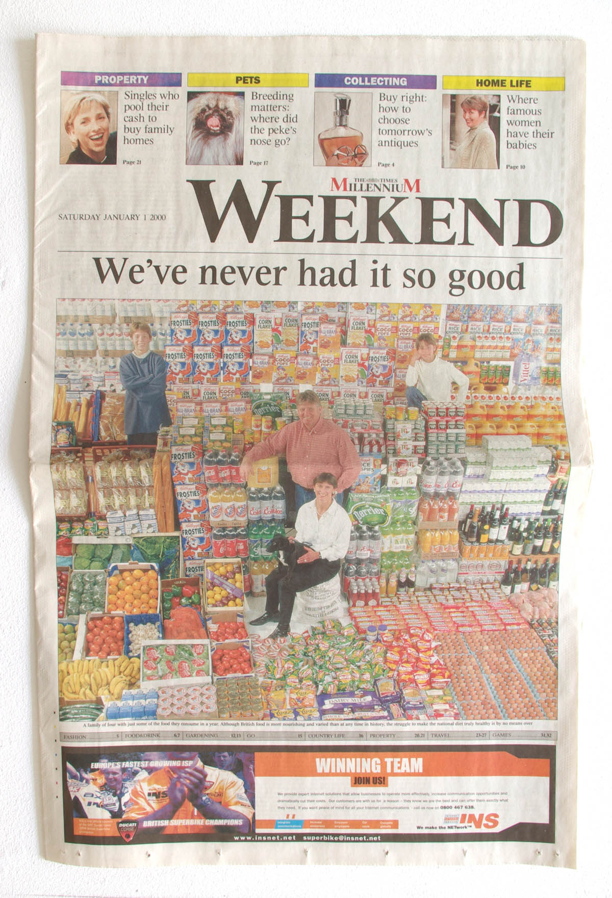
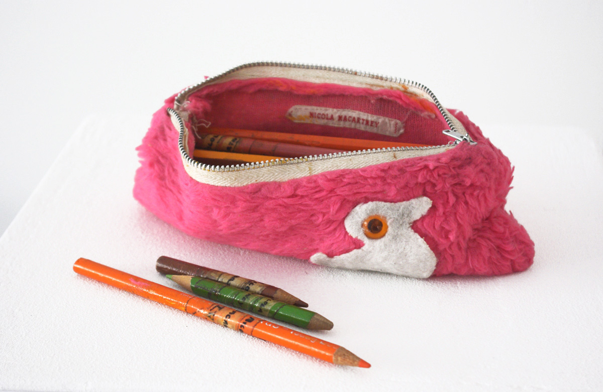
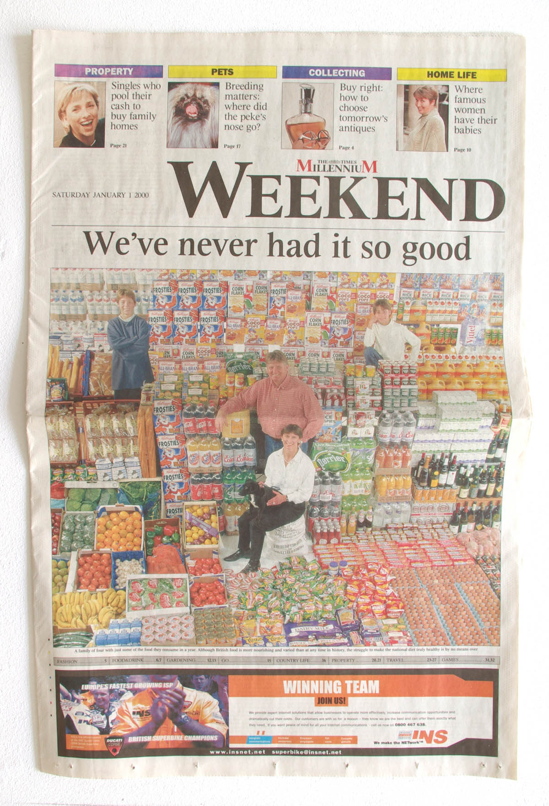
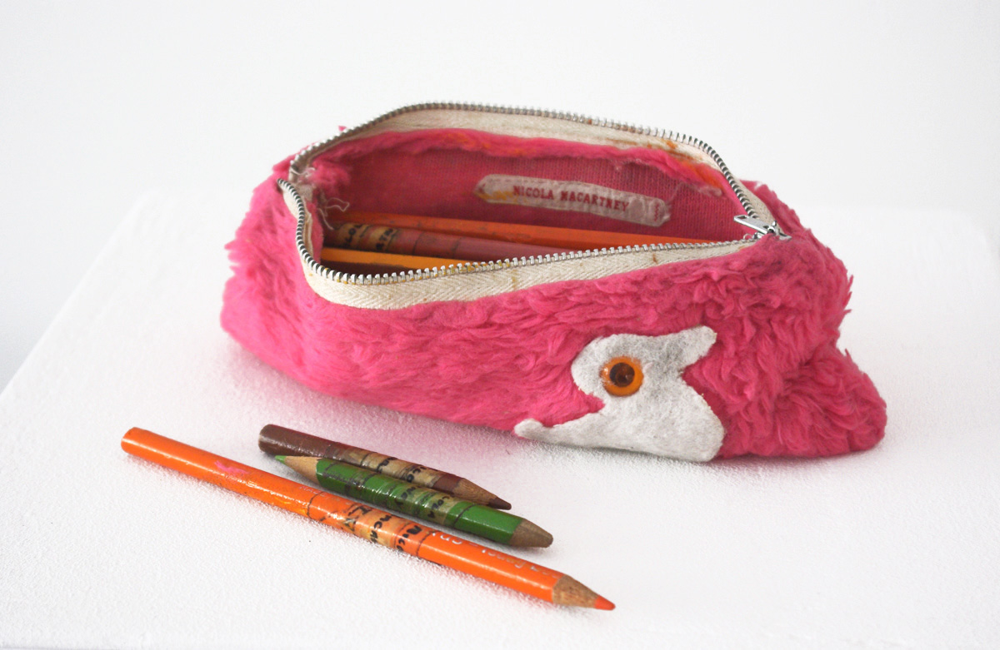

I was awarded a three month bursary by Goldsmiths' College to research and curate an exhibition exploring the unusual array of objects found in the Lewisham Local History Society's archive. We worked with a team of volunteer archivists to deliver an exhibition, exploring the everyday ephemera and material culture of Lewisham. This project was supported through the Santander graduate training scheme in partnership with Goldsmiths' Department of Visual Cultures and the Enterprise Fund.
Visit the project websiteDownload the catalogue